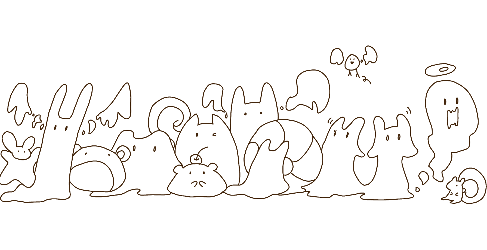

Ya-Ning (Yanni) Wu
Research
Art
Music
About :)
Updates
CV
Categories
All
(7)
about
(1)
ballad
(3)
copyright
(1)
dramatic
(1)
dream
(2)
experimental
(1)
free_music_library
(1)
fun
(1)
futuristic
(1)
guitar
(1)
interlude
(1)
metal
(1)
nostalgic
(2)
piano
(2)
relaxing
(1)
rock
(1)
short
(3)
soft
(1)
user_guide
(1)
waltz
(1)
warm
(1)
Music
Important
guideline
on how to use the
library
Order By
Default
Title
Date - Oldest
Date - Newest

Guide
user_guide
about
free_music_library
copyright
About the creator (me), and how to use this music library.
Golden City
piano
waltz
nostalgic
ballad
Waltzing with ghosts in the remnants. Broken chandeliers still whisper secrets, while faded music lingers in the dust.
Departure
warm
nostalgic
dream
ballad
At a train platform, bidding farewell.
0101
experimental
short
dream
futuristic
Experimenting techy-dreamy sounding instruments. A gift for someone.
Dancing Stairs
short
guitar
dramatic
interlude
Two frenemies dancing all the way down the stairs.
Leisure Afternoon
piano
relaxing
soft
ballad
That gentle feeling when you wake up from a nap, in a leisure afternoon.
Cat!
metal
rock
short
fun
A battle cat wreaking havoc in your room. All curtains and mugs have fallen.
No matching items